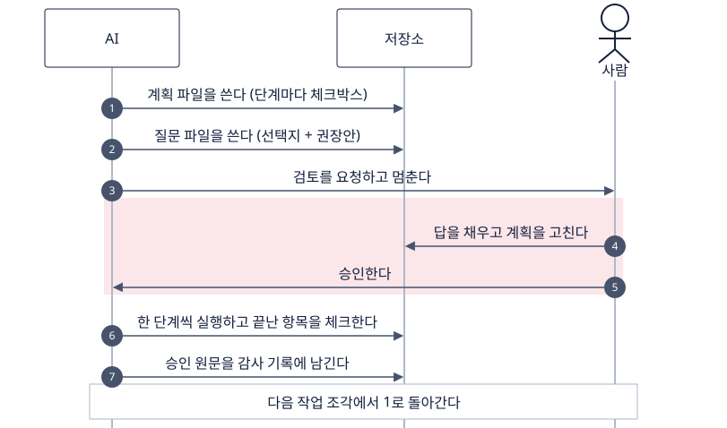

AI-DLC는 무엇을 바꾸는가
AI-DLC(AI-Driven Development Life Cycle)는 AWS가 2025년에 내놓은 개발 방법론이다. 기존 스프린트에 AI 도구를 끼워 넣지 않고 AI가 계획하고 묻고 실행하며 사람은 결정과 검증을 맡는 구조로 생애주기 전체를 다시 짰다.
정의 한 줄
Dedicatted 가이드는 이 방법론을 "AI does the work. You keep the decisions."로 요약한다. Dedicatted, 2026-08
일은 AI가 하고 결정은 사람이 쥔다. 화이트페이퍼는 AI-DLC를 "AI의 능력을 완전히 통합하도록 다시 설계한 AI 네이티브 방법론"이라고 부른다. AWS 블로그는 두 축으로 설명한다.
- 사람의 감독을 받는 AI 실행: AI가 상세 작업 계획을 세우고 불분명한 것을 묻고 중요한 결정은 사람에게 넘긴다. 맥락과 비즈니스 요구는 사람만 알기 때문이다.
- 동적 팀 협업: AI가 반복 작업을 맡는 동안 팀은 한 공간에 모여 실시간으로 문제를 풀고 결정한다.
용어의 기원: AWS의 Raja SP가 2025년 백서 「AI-Driven Development Lifecycle (AI-DLC) Method Definition」에서 처음 썼다. IBM Think
AI-DLC는 제품이 아니라 방법론이다. 실행 도구인 aidlc-workflows도 규칙 파일 묶음이라서, Claude Code·Kiro·Amazon Q Developer·Cursor 같은 기존 코딩 에이전트에 얹어 쓰기 때문에 따로 살 것이 없다. 이 이름은 모델을 만드는 "AI 라이프사이클"과도 다르다. AI-DLC는 AI로 소프트웨어를 만드는 생애주기다.
왜 나왔나: 세 가지 패러다임
AWS는 지금 조직들이 AI를 쓰는 방식을 둘로 나누고 둘 다 속도와 품질에서 한계가 드러났다고 진단한다. AI-DLC는 그 사이의 세 번째 길이다.
| 패러다임 | 누가 주도하나 | 문제 |
|---|---|---|
| AI 보조 AI-assisted | 사람이 생각하고 AI는 자동완성·문서화·테스트 같은 조각 작업을 돕는다 | 지적 중노동은 여전히 사람 몫이다. 빌드만 빨라지고 요구사항·승인은 그대로라 병목이 옮겨갈 뿐이다 |
| AI 자율 AI-autonomous | 프롬프트를 주고 AI가 앱 전체를 만들어 주기를 기대한다 | 지금의 AI는 의도를 코드로 혼자 옮길 만큼 믿을 수 없다. 해석 가능성과 안전성을 보장하지 못한다 |
| AI 주도 AI-driven · AI-DLC | AI가 계획·분해·제안·실행을 이끌고 사람은 분기점마다 검증하고 결정한다 | 사람 검증이 병목이 되지 않도록 결정 권한과 승인 절차를 다시 설계해야 한다 |
"2026년에는 거의 모든 조직에 AI 코딩 도구가 있지만 그 덕분에 더 일찍 나간 릴리스는 거의 없다." Dedicatted 가이드의 진단
화이트페이퍼의 문제의식은 이렇다. 워터폴과 애자일은 사람으로 이뤄진 팀이 몇 주 단위로 일하는 것을 전제로 만들어졌으므로 그 틀에 AI를 덧붙이면 잠재력이 제한될 뿐 아니라 "시대착오적인 비효율을 강화"한다. 화이트페이퍼는 이것을 "더 빠른 마차가 아니라 자동차가 필요하다"고 비유한다.
대화 방향의 역전
AI-DLC에서 가장 크게 바뀌는 것은 대화의 방향이다. 지금까지는 사람이 묻고 AI가 답했다. AI-DLC에서는 AI가 계획을 내밀고 질문을 던지며 사람이 답하고 승인한다. 이 순환이 모든 활동에서 짧게 반복된다.
- AI가 계획을 세운다체크박스가 달린 계획 파일을 만든다. 무엇을 어떤 순서로 할지, 무엇이 불확실한지 적는다.
- AI가 빠진 것을 묻는다추측으로 메우지 않고 확인이 필요한 항목을 질문으로 남긴다.
- 사람이 결정한다승인 지점 답하고 고치고 승인한다. 결정은 회의록 대신 저장소에 남긴다.
- AI가 실행한다승인된 계획을 한 단계씩 실행하고 끝난 항목을 체크한다. 그리고 다음 작업 조각에서 1로 돌아간다.

화이트페이퍼 부록 A의 프롬프트에는 "중요한 결정을 스스로 내리지 마세요", "승인 전에는 실행하지 마세요"가 매번 들어간다.
화이트페이퍼는 이것을 지도 앱에 비유한다. 사람이 목적지(의도)를 정하면 시스템이 경로를 안내하고 사람은 가는 동안 지켜보다가 길을 바꾼다. 이 문서에서 빨간 마름모 승인 지점은 언제나 사람이 결정하는 자리를 뜻한다.
10가지 원칙
화이트페이퍼 2장의 원칙이다. 이름은 한국어본 표기를 다듬었다.
- 덧붙이지 말고 다시 생각한다. 반복이 주 단위에서 시간·일 단위로 짧아지면 데일리 스탠드업·회고 같은 의식의 의미가 줄어든다. 스토리 포인트와 속도(velocity)가 여전히 맞는 지표인지도 다시 묻는다.
- 대화 방향을 뒤집는다. AI가 의도를 실행 가능한 작업으로 나누고 권장안과 트레이드오프를 내놓는다. 사람은 중요한 분기점에서 검증하고 고른다.
- 설계 기법을 방법론 안으로 들인다. 스크럼·칸반은 DDD 같은 설계 기법을 범위 밖에 두었다. AI-DLC는 설계를 핵심에 넣는다. DDD·BDD·TDD 각각에 맞는 변형이 있고 백서는 DDD 변형을 다룬다.
- 지금 AI가 할 수 있는 만큼에 맞춘다. 미래 가능성에는 낙관하되 현재에는 현실적이다. 검증·결정·감독의 최종 책임은 개발자에게 둔다.
- 복잡한 시스템을 위한 방법론이다. 트레이드오프·확장성·통합이 얽힌, 여러 팀이 함께 만드는 시스템이 대상이다. 단순한 시스템은 로우코드·노코드가 낫다.
- 사람과의 협업을 돕는 것은 남긴다. 사용자 스토리는 사람과 AI가 이해를 맞추는 계약으로, 위험 레지스터는 AI 산출물이 조직의 위험 기준을 지키게 하는 장치로 유지한다.
- 익숙한 개념으로 갈아타게 한다. 기존 실무자가 하루 만에 익힐 수 있어야 한다. 옛 용어와 연결되는 새 용어를 쓴다. 스프린트와 성격이 달라서 일부러 "볼트(Bolt)"라고 바꿔 부른다.
- 역할을 줄인다. AI 덕분에 개발자가 인프라·프론트엔드·백엔드·보안의 경계를 넘나든다. 꼭 필요한 역할은 제품 책임자(PO)와 개발자다.
- 단계는 줄이고 흐름은 늘린다. 인수인계를 줄이되, AI 코드가 굳어 버리는 "빠른 시멘트"를 막기 위해 사람 검증 단계는 최소한이지만 충분하게 둔다. 이 검증은 오류가 하류로 번지기 전에 잡는 손실 함수 역할을 한다.
- 고정된 워크플로를 두지 않는다. 신규 개발·리팩토링·결함 수정마다 정해진 절차를 두지 않는다. AI가 의도를 보고 계획을 제안하고 사람이 대화로 조정한다.
IBM Think는 원칙 3을 "DDD·BDD·TDD가 모두 필수 요소가 된다"고 써서 화이트페이퍼("방법론별 변형이 있다")와 뉘앙스가 다르다. 이 문서는 화이트페이퍼를 따른다.
핵심 용어
- Intent의도
- 달성하려는 것을 적은 고수준 목적 선언. 비즈니스 목표, 기능, 기술 성과(예: "피크 트래픽 10배 대응")가 모두 Intent가 될 수 있다. AI가 분해를 시작하는 출발점이다.
- Unit유닛 · Unit of Work
- Intent에서 나온, 응집도가 높고 스스로 완결되는 작업 덩어리. DDD의 서브도메인이나 스크럼의 에픽에 가깝고 사용자 스토리 묶음을 품는다. 다른 Unit과 느슨하게 결합돼 따로 개발하고 따로 배포할 수 있어야 한다. 에이전트가 컨텍스트에 한 번에 담고 팀이 한 번에 검증할 수 있을 만큼 작아야 한다.
- Bolt볼트
- 가장 작은 반복 단위. 스프린트에 해당하지만 길이는 시간·일 단위다. Unit 하나를 Bolt 하나 이상으로 실행하며 병렬로도 순차로도 돌릴 수 있다. AI가 Bolt를 계획하고 사람이 검증한다. Dedicatted 가이드는 파일럿에서 2~3일짜리 Bolt를 권한다.
- Domain Design도메인 설계
- 인프라와 무관하게 Unit의 핵심 비즈니스 로직을 모델링한 것. 애그리거트, 값 객체, 엔티티, 도메인 이벤트, 리포지토리, 팩토리를 DDD로 정리한다.
- Logical Design논리 설계
- 도메인 설계에 비기능 요구사항(NFR)을 입힌 것. CQRS나 서킷 브레이커 같은 패턴을 고르고 그 선택을 ADR(아키텍처 결정 기록)로 남겨 사람이 검증하게 한다.
- Deployment Unit배포 유닛
- 운영에 나가는 묶음. 실행 코드(컨테이너 이미지, 서버리스 함수), 구성(Helm 차트 등), 인프라 코드(Terraform·CloudFormation)를 포함하고 기능·보안·NFR 테스트를 통과한 상태다.
- Mob Elaboration몹 정교화
- Inception 단계의 의식. PO·개발자·QA·이해관계자가 한 방에서 화면 하나를 함께 본다. AI가 Intent를 스토리·수용 기준·Unit으로 처음 쪼개 내놓으면, 팀이 지나치거나 모자란 부분을 그 자리에서 고친다.
- Mob Construction몹 구축
- Construction 단계의 의식. Unit을 맡은 팀들이 한 공간에서 도메인 모델과 Unit 사이 통합 명세를 주고받고 결정을 내리고 Bolt를 끝낸다. 화이트페이퍼 예시에서는 "몹 프로그래밍과 몹 테스팅"이라고도 부른다.
- Level 1 Plan레벨 1 계획
- AI가 Intent를 보고 처음 내놓는 최상위 작업 계획. 각 단계는 다시 레벨 2(서브태스크)로 쪼개지고 계층마다 같은 "AI 제안 → 사람 검증"이 되풀이된다.
- Context Memory컨텍스트 메모리
- Intent·스토리·도메인 모델·테스트 계획 같은 산출물을 저장소에 모두 남겨 AI가 생애주기 내내 다시 읽게 하는 것. 세션이 바뀌어도 이어서 일할 수 있는 이유다.
- Traceability추적성
- 실패한 테스트 → 코드 → 사용자 스토리 → Intent로 거꾸로 따라갈 수 있는 연결. 산출물마다 상위 산출물의 ID를 달아 만든다.
- Steering File스티어링 파일
- 에이전트가 따라야 할 규칙·아키텍처 표준·보안 정책·허용 의존성을 적은 저장소 안 문서. 화이트페이퍼에는 없고 IBM·Dedicatted 자료와 실행 도구 쪽에서 강조하는 개념이다.
- AI PodAI 포드
- 몹 방식으로 함께 일하는 개발자 2~3명. Dedicatted 가이드는 약 7명 규모의 스크럼 팀이 이 크기로 바뀐다고 본다.
Intent → Unit → Bolt
세 단위가 어떻게 겹치는지, 화이트페이퍼의 그린필드 예시 "크로스셀링 추천 엔진"으로 그려 보면 이렇다. 볼트 이름은 이해를 돕기 위해 붙인 예다.
PO가 비즈니스 목표로 말한다. AI가 레벨 1 계획을 만들고 팀이 승인한다.
이 예시에는 사람이 개입해 방향을 바꾸는 장면이 두 번 나온다. Inception에서 PO가 "사용자 데이터 수집에 개인정보 보호 내용이 없다"며 GDPR 고려를 추가하고 Construction에서 개발자가 AI가 권한 저장소를 받아들이지 않고 쿼리 성능 때문에 DynamoDB로 바꾼다. AI가 초안을 빠르게 내놓고 사람은 맥락이 필요한 판단에 집중한다.
애자일·스크럼과의 차이
| 항목 | 스크럼 | AI-DLC |
|---|---|---|
| 반복 단위 | 스프린트, 보통 2주(AI 이전에는 4~6주도 흔했다) | Bolt, 시간~일 단위 |
| 작업 묶음 | 에픽 → 스토리 | Intent → Unit → 스토리 |
| 요구사항 정리 | 백로그 그루밍, 비동기로 나눠서 | Mob Elaboration, 한 자리에서 실시간으로 |
| 설계 | 방법론 범위 밖, 팀마다 다름 | 도메인 설계·논리 설계가 단계 안에 들어 있음 |
| 리뷰 | 다 만든 뒤 PR 리뷰 | 연속·자동 리뷰. 사람은 로직·권한·비즈니스 규칙만 본다 |
| 문서 | 나중에 따로 쓴다 | 변경과 함께 AI가 생성·갱신한다 |
| 팀 | 약 7명, 전문 역할 분리 | 2~3명 포드, PO와 개발자 중심 |
| 추정 | 스토리 포인트, 속도 | 다시 묻는다. 배포까지 걸린 시간 같은 흐름 지표 쪽으로 |
근거: 화이트페이퍼 원칙 1·7·8, Dedicatted 가이드 비교표.
이름만 바꾸면 아무것도 바뀌지 않는다
스프린트를 Bolt로, 에픽을 Unit으로 바꿔 부르면서 2주 주기와 사후 리뷰를 그대로 두면 효과가 없다. 화이트페이퍼는 "기존 애자일에서 크게 벗어나지 않는다"며 쉬운 전환을 강조하지만 Dedicatted 가이드는 이것을 가장 흔한 실패로 꼽는다. 용어는 익숙하게, 주기와 결정 구조는 새로 짜야 한다.
맞는 곳과 맞지 않는 곳
잘 맞는 곳은 트레이드오프가 많고 여러 팀이 걸친 시스템, 규제나 보안 요구가 있는 조직, 기존 코드에 기능을 계속 얹어야 하는 브라운필드다. 화이트페이퍼가 명시한 대상이다.
맞지 않는 곳은 혼자 하는 프로토타이핑(절차 대부분이 오버헤드다)과 트레이드오프가 거의 없는 단순 앱이라 로우코드·노코드가 낫다.
AI-DLC가 고치지 못하는 것도 분명하다. Dedicatted 가이드는 네 가지를 꼽는다.
- 얻을 수 없는 요구사항. Mob Elaboration은 빈틈을 빨리 드러낼 뿐 메워 주지 않는다.
- 다시 설계하지 않은 승인 절차. 생성이 빨라질수록 승인 대기열만 길어진다.
- 아무도 갖지 않은 결정 권한. 결정을 사람에게 넘기는 구조라, 결정할 사람이 없으면 거기서 멈춘다.
- 약한 엔지니어링 기반. 빌드가 40분 걸리면 시간 단위 Bolt는 불가능하다. 생성량이 늘면 약한 테스트와 느린 파이프라인이 더 큰 문제가 된다. 가장 흔한 실패 유형이다.
"AI-DLC는 기존 엔지니어링 관행을 증폭할 뿐, 기반의 결함을 메우지 않는다." Dedicatted 가이드가 인용한 AWS의 말
번역어 정리
한국어 자료마다 번역어가 다르다. 이 문서는 원어를 그대로 쓰고 처음 나올 때 풀이를 붙인다.
| 원어 | AWS 한국 블로그 | 화이트페이퍼 한국어본 | IBM | 이 문서 |
|---|---|---|---|---|
| Inception | 착수 | 구상 | 시작 | Inception(구상) |
| Construction | 구축 | 구축 | 구축 | Construction(구축) |
| Operations | 운영 | 운영 | 운영 | Operations(운영) |
| Mob Elaboration | 몹 정교화 | 모브 엘라보레이션 | 몹 정교화 | Mob Elaboration(몹 정교화) |
| Unit | 작업 단위 | 유닛 | 유닛 | Unit |
이 장의 출처
- AWS 기술 블로그, 「AI 주도 개발 라이프사이클: 소프트웨어 엔지니어링의 재구상」 (2025-10-29, Raja SP 원문 번역)
- AI-DLC 화이트페이퍼 한국어본 (Raja SP, AWS)
- IBM Think, 「AI-DLC: AI 기반 개발 라이프사이클」 (2026-08)
- Dedicatted, 「From AI-assisted to AI-driven」 (2026-08, AWS 공식 출판물 아님)